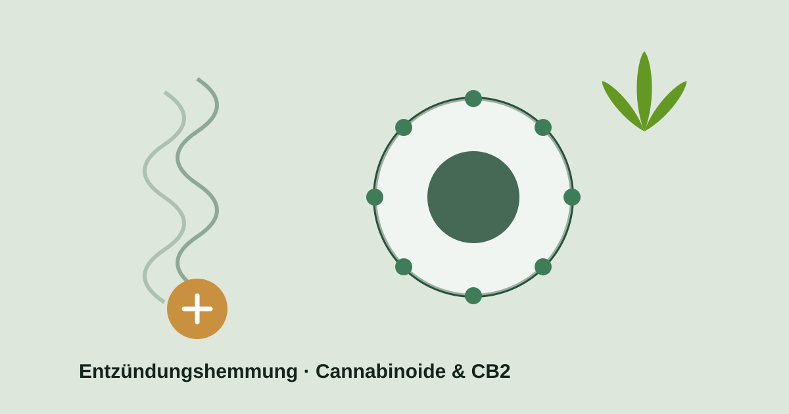

Aus der Forschung
Cannabis und Entzündungen: Was hinter der entzündungshemmenden Wirkung steckt

Entzündungen sind eine natürliche Abwehrreaktion des Körpers – doch wenn sie chronisch werden, können sie Schmerzen verstärken und das Wohlbefinden erheblich beeinträchtigen. Genau hier rückt eine viel beachtete Eigenschaft von Cannabis in den Fokus: seine mögliche entzündungshemmende Wirkung.
Cannabinoide wie THC und CBD greifen in das körpereigene Endocannabinoid-System ein, das an der Steuerung von Entzündungsprozessen beteiligt ist. Die Forschung dazu ist vielversprechend – und wird laufend erweitert.
Der Mechanismus: das Endocannabinoid-System und CB2
Der Körper besitzt ein eigenes Steuerungssystem für viele Prozesse – das Endocannabinoid-System. Für Entzündungen sind vor allem die CB2-Rezeptoren interessant: Sie sitzen überwiegend auf Immunzellen. Werden sie aktiviert, kann das die Aktivität des Immunsystems und damit den Entzündungsverlauf beeinflussen.
In vorklinischen Studien (Zell- und Tiermodelle) senkten Cannabinoide die Menge entzündungsfördernder Botenstoffe – sogenannter Zytokine wie TNF-α, IL-1β und IL-6. Genau diese Botenstoffe treiben Entzündungsreaktionen an. Das liefert eine plausible biologische Grundlage für die beobachteten Effekte.
Was CBD besonders macht
Dem Cannabinoid CBD werden neben entzündungshemmenden auch antioxidative Eigenschaften zugeschrieben. In der Forschung gilt es als besonders interessant, weil es ohne die berauschende Wirkung von THC auskommt. Übersichtsarbeiten sehen in CBD ein Molekül mit Potenzial in der Schmerz- und Entzündungsbehandlung – ein Grund, warum es intensiv weiter untersucht wird.
Ehrlich eingeordnet: starkes Fundament, wachsende Evidenz
Die stärksten Belege stammen bislang aus dem Labor und aus Tiermodellen. Beim Menschen ist das Bild vielschichtiger: Wie stark der entzündungshemmende Effekt ausfällt, hängt unter anderem von Wirkstoff, Dosierung, Produktart und der jeweiligen Erkrankung ab. Naturprodukte und synthetische Cannabinoide verhalten sich dabei nicht gleich.
Das ist keine Absage – im Gegenteil: Es zeigt, dass eine individuell abgestimmte, ärztlich begleitete Anwendung entscheidend ist, um den möglichen Nutzen auszuschöpfen. Die klinische Forschung zu Cannabis und Entzündungen ist aktiv und wächst stetig.
Was das für Patient:innen bedeutet
Gerade bei Beschwerden, bei denen Entzündungen und Schmerzen zusammenspielen, ist die entzündungshemmende Komponente von Cannabis ein spannender Ansatzpunkt. Ob und wie Medizinalcannabis für Dich infrage kommt, klärst Du am besten gemeinsam mit Deiner Ärztin oder Deinem Arzt – abgestimmt auf Deine Situation.
Dieser Beitrag dient der allgemeinen Information und ersetzt keine ärztliche Beratung. Medizinalcannabis ist ein verschreibungspflichtiges Arzneimittel; eine Belieferung erfolgt ausschließlich gegen gültige ärztliche Verordnung.
Quellen
- Antioxidative and Anti-Inflammatory Properties of Cannabidiol – PMC. ncbi.nlm.nih.gov
- Effects of Cannabidiol on Innate Immunity: Experimental Evidence and Clinical Relevance – PMC. ncbi.nlm.nih.gov
- Cannabidiol (CBD): A Systematic Review of Clinical and Preclinical Evidence in the Treatment of Pain – MDPI Pharmaceuticals. mdpi.com